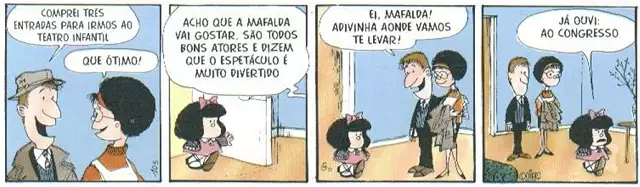

A tirinha custuma criticar algum tema, mas há algumas que vem apenas com o intuito de divertir. Ela tem, uma sequência de quadrinhos podendo varear em sua quantidade.
Com seu desenho simples, o cartum tem o intuito de humorizar determinado assunto. Ela é composta de apenas um quadrinho e geralmente é preto e branco.
A charge tem como objetivo sátirizar um problema da humanidade, exagerando o jeito como está para ter um impacto maior. Custuma ser colorida e apresenta apenas um quadrinho.